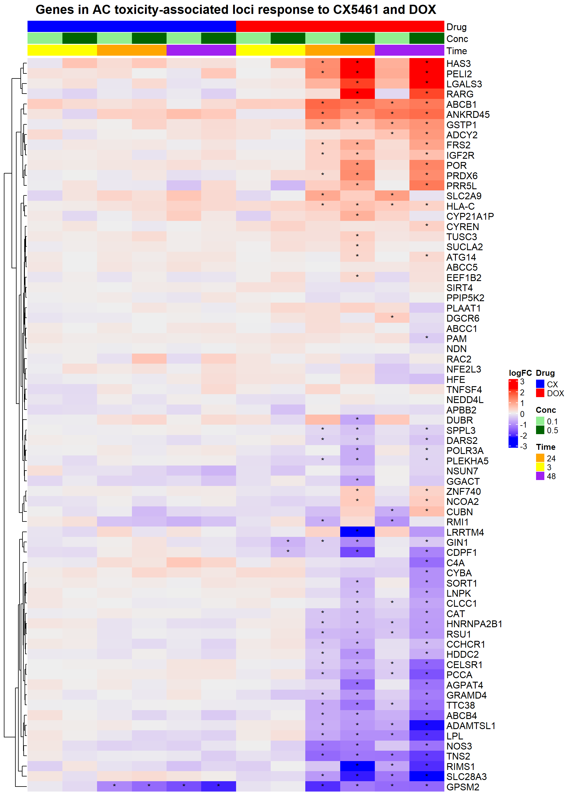
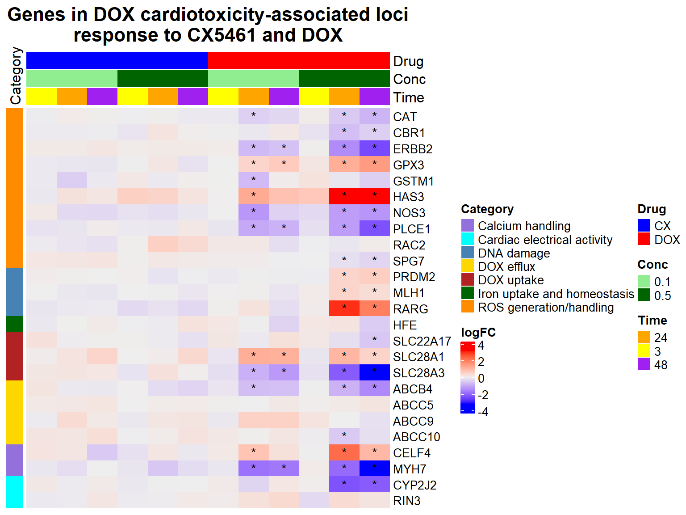

Last updated: 2025-05-04
Checks: 6 1
Knit directory: CX5461_Project/
This reproducible R Markdown analysis was created with workflowr (version 1.7.1). The Checks tab describes the reproducibility checks that were applied when the results were created. The Past versions tab lists the development history.
The R Markdown file has unstaged changes. To know which version of
the R Markdown file created these results, you’ll want to first commit
it to the Git repo. If you’re still working on the analysis, you can
ignore this warning. When you’re finished, you can run
wflow_publish to commit the R Markdown file and build the
HTML.
Great job! The global environment was empty. Objects defined in the global environment can affect the analysis in your R Markdown file in unknown ways. For reproduciblity it’s best to always run the code in an empty environment.
The command set.seed(20250129) was run prior to running
the code in the R Markdown file. Setting a seed ensures that any results
that rely on randomness, e.g. subsampling or permutations, are
reproducible.
Great job! Recording the operating system, R version, and package versions is critical for reproducibility.
Nice! There were no cached chunks for this analysis, so you can be confident that you successfully produced the results during this run.
Great job! Using relative paths to the files within your workflowr project makes it easier to run your code on other machines.
Great! You are using Git for version control. Tracking code development and connecting the code version to the results is critical for reproducibility.
The results in this page were generated with repository version 03e5eba. See the Past versions tab to see a history of the changes made to the R Markdown and HTML files.
Note that you need to be careful to ensure that all relevant files for
the analysis have been committed to Git prior to generating the results
(you can use wflow_publish or
wflow_git_commit). workflowr only checks the R Markdown
file, but you know if there are other scripts or data files that it
depends on. Below is the status of the Git repository when the results
were generated:
Ignored files:
Ignored: .RData
Ignored: .Rhistory
Ignored: .Rproj.user/
Ignored: 0.1 box.svg
Ignored: Rplot04.svg
Untracked files:
Untracked: 0.1 density.svg
Untracked: 0.1.emf
Untracked: 0.1.svg
Untracked: 0.5 box.svg
Untracked: 0.5 density.svg
Untracked: 0.5.svg
Untracked: Additional/
Untracked: CX_5461_Pattern_Genes_24hr.csv
Untracked: CX_5461_Pattern_Genes_3hr.csv
Untracked: Cell viability box plot.svg
Untracked: DRC1.svg
Untracked: Figure 1.jpeg
Untracked: Figure 1.pdf
Untracked: Figure_CM_Purity.pdf
Untracked: Rplot.svg
Untracked: Rplot01.svg
Untracked: Rplot02.svg
Untracked: Rplot03.svg
Untracked: Rplot05.svg
Untracked: Rplot06.svg
Untracked: Rplot07.svg
Untracked: Rplot08.jpeg
Untracked: Rplot08.svg
Untracked: Rplot09.svg
Untracked: Rplot10.svg
Untracked: Rplot11.svg
Untracked: TS HPA (Violin).svg
Untracked: TS HPA.svg
Untracked: TS_HA.svg
Untracked: TS_HV.svg
Untracked: Violin HA.svg
Untracked: Violin HV (CX vs DOX).svg
Untracked: Violin HV.svg
Untracked: data/AF.csv
Untracked: data/AF_Mapped.csv
Untracked: data/AF_genes.csv
Untracked: data/Annotated_DOX_Gene_Table.csv
Untracked: data/CAD_genes.csv
Untracked: data/Cardiotox.csv
Untracked: data/DDR.csv
Untracked: data/DDR_Mapped.csv
Untracked: data/DOX_Vald.csv
Untracked: data/DOX_Vald_Mapped.csv
Untracked: data/Entrez_Cardiotox.csv
Untracked: data/Entrez_Cardiotox_Mapped.csv
Untracked: data/GWAS.xlsx
Untracked: data/GWAS_SNPs.bed
Untracked: data/HF.csv
Untracked: data/HF_Mapped.csv
Untracked: data/HF_genes.csv
Untracked: data/Hypertension_genes.csv
Untracked: data/MI_genes.csv
Untracked: data/TS.csv
Untracked: data/TS_HPA.csv
Untracked: data/TS_HPA_mapped.csv
Untracked: data/Toptable_CX_0.1_24.csv
Untracked: data/Toptable_CX_0.1_3.csv
Untracked: data/Toptable_CX_0.1_48.csv
Untracked: data/Toptable_CX_0.5_24.csv
Untracked: data/Toptable_CX_0.5_3.csv
Untracked: data/Toptable_CX_0.5_48.csv
Untracked: data/Toptable_DOX_0.1_24.csv
Untracked: data/Toptable_DOX_0.1_3.csv
Untracked: data/Toptable_DOX_0.1_48.csv
Untracked: data/Toptable_DOX_0.5_24.csv
Untracked: data/Toptable_DOX_0.5_3.csv
Untracked: data/Toptable_DOX_0.5_48.csv
Untracked: data/ts_data_mapped
Untracked: results/
Untracked: run_bedtools.bat
Unstaged changes:
Deleted: analysis/Actox.Rmd
Modified: analysis/Cardiotox.Rmd
Note that any generated files, e.g. HTML, png, CSS, etc., are not included in this status report because it is ok for generated content to have uncommitted changes.
These are the previous versions of the repository in which changes were
made to the R Markdown (analysis/Cardiotox.Rmd) and HTML
(docs/Cardiotox.html) files. If you’ve configured a remote
Git repository (see ?wflow_git_remote), click on the
hyperlinks in the table below to view the files as they were in that
past version.
| File | Version | Author | Date | Message |
|---|---|---|---|---|
| Rmd | 2f74123 | sayanpaul01 | 2025-04-24 | Commit |
| html | 2f74123 | sayanpaul01 | 2025-04-24 | Commit |
| html | 693aad4 | sayanpaul01 | 2025-04-20 | Build site. |
| html | 0d15a95 | sayanpaul01 | 2025-04-20 | Commit |
| Rmd | b5ace31 | sayanpaul01 | 2025-04-20 | Commit |
| html | 910b6fb | sayanpaul01 | 2025-04-20 | Commit |
library(tidyverse)
library(ggfortify)
library(cluster)
library(edgeR)
library(limma)
library(Homo.sapiens)
library(BiocParallel)
library(qvalue)
library(pheatmap)
library(clusterProfiler)
library(AnnotationDbi)
library(org.Hs.eg.db)
library(RColorBrewer)
library(readr)
library(TxDb.Hsapiens.UCSC.hg38.knownGene)
library(ComplexHeatmap)
library(circlize)
library(grid)
library(reshape2)
library(dplyr)
# Load UCSC transcript database
txdb <- TxDb.Hsapiens.UCSC.hg38.knownGene# Load DEGs Data
CX_0.1_3 <- read.csv("data/DEGs/Toptable_CX_0.1_3.csv")
CX_0.1_24 <- read.csv("data/DEGs/Toptable_CX_0.1_24.csv")
CX_0.1_48 <- read.csv("data/DEGs/Toptable_CX_0.1_48.csv")
CX_0.5_3 <- read.csv("data/DEGs/Toptable_CX_0.5_3.csv")
CX_0.5_24 <- read.csv("data/DEGs/Toptable_CX_0.5_24.csv")
CX_0.5_48 <- read.csv("data/DEGs/Toptable_CX_0.5_48.csv")
DOX_0.1_3 <- read.csv("data/DEGs/Toptable_DOX_0.1_3.csv")
DOX_0.1_24 <- read.csv("data/DEGs/Toptable_DOX_0.1_24.csv")
DOX_0.1_48 <- read.csv("data/DEGs/Toptable_DOX_0.1_48.csv")
DOX_0.5_3 <- read.csv("data/DEGs/Toptable_DOX_0.5_3.csv")
DOX_0.5_24 <- read.csv("data/DEGs/Toptable_DOX_0.5_24.csv")
DOX_0.5_48 <- read.csv("data/DEGs/Toptable_DOX_0.5_48.csv")
Entrez_IDs <- c(
6272, 8029, 11128, 79899, 54477, 121665, 5095, 22863, 57161, 4692,
8214, 23151, 56606, 108, 22999, 56895, 9603, 3181, 4023, 10499,
92949, 4363, 10057, 5243, 5244, 5880, 1535, 2950, 847, 5447,
3038, 3077, 4846, 3958, 23327, 29899, 23155, 80856, 55020, 78996,
150383, 79730, 344595, 6251, 3482, 23262, 9588, 87769, 23409, 339416, 7292, 55157, 720, 5066, 3107, 54535, 1590, 80059, 7991, 57110, 8803, 9620, 323, 54826, 5916, 23371, 283337, 64078, 80010, 1933, 10818, 51020, 873, 874, 2064, 2878, 2944, 51196, 6687, 7799, 4292, 51310, 9154, 10060, 89845, 56853, 4625, 1573, 79890
)
# Subset the toptable based on the entrez IDs and select specific columns
subset_toptable1 <- CX_0.1_3[CX_0.1_3$Entrez_ID %in% Entrez_IDs, c("Entrez_ID", "logFC", "adj.P.Val")]
subset_toptable2 <- CX_0.1_24[CX_0.1_24$Entrez_ID %in% Entrez_IDs, c("Entrez_ID", "logFC", "adj.P.Val")]
subset_toptable3 <- CX_0.1_48[CX_0.1_48$Entrez_ID %in% Entrez_IDs, c("Entrez_ID", "logFC", "adj.P.Val")]
subset_toptable3 <- CX_0.1_48[CX_0.1_48$Entrez_ID %in% Entrez_IDs, c("Entrez_ID", "logFC", "adj.P.Val")]
subset_toptable4 <- CX_0.5_3[CX_0.5_3$Entrez_ID %in% Entrez_IDs, c("Entrez_ID", "logFC", "adj.P.Val")]
subset_toptable5 <- CX_0.5_24[CX_0.5_24$Entrez_ID %in% Entrez_IDs, c("Entrez_ID", "logFC", "adj.P.Val")]
subset_toptable6 <- CX_0.5_48[CX_0.5_48$Entrez_ID %in% Entrez_IDs, c("Entrez_ID", "logFC", "adj.P.Val")]
subset_toptable7 <- DOX_0.1_3[DOX_0.1_3$Entrez_ID %in% Entrez_IDs, c("Entrez_ID", "logFC", "adj.P.Val")]
subset_toptable8 <- DOX_0.1_24[DOX_0.1_24$Entrez_ID %in% Entrez_IDs, c("Entrez_ID", "logFC", "adj.P.Val")]
subset_toptable9 <- DOX_0.1_48[DOX_0.1_48$Entrez_ID %in% Entrez_IDs, c("Entrez_ID", "logFC", "adj.P.Val")]
subset_toptable10 <- DOX_0.5_3[DOX_0.5_3$Entrez_ID %in% Entrez_IDs, c("Entrez_ID", "logFC", "adj.P.Val")]
subset_toptable11 <- DOX_0.5_24[DOX_0.5_24$Entrez_ID %in% Entrez_IDs, c("Entrez_ID", "logFC", "adj.P.Val")]
subset_toptable12 <- DOX_0.5_48[DOX_0.5_48$Entrez_ID %in% Entrez_IDs, c("Entrez_ID", "logFC", "adj.P.Val")]# Assuming your dataframe is named data
# Add a column for significance stars
final_data <- final_data %>%
mutate(Significance = ifelse(adj.P.Val < 0.05, "*", ""))
# Create a matrix for the heatmap (logFC values)
logFC_matrix <- acast(final_data, Gene ~ paste(Drug, Conc, Time, sep = "_"), value.var = "logFC")
# Create a matrix for the significance annotations
signif_matrix <- acast(final_data, Gene ~ paste(Drug, Conc, Time, sep = "_"), value.var = "Significance")
# Split column names into Drug, Conc, and Time
colnames_split <- strsplit(colnames(logFC_matrix), "_")
drug <- sapply(colnames_split, function(x) x[1])
conc <- sapply(colnames_split, function(x) x[2])
time <- sapply(colnames_split, function(x) x[3])
# Create the desired column order: CX 0.1 3hr, CX 0.5 3hr, CX 0.1 24hr, CX 0.5 24hr, CX 0.1 48h, CX 0.5 48h,
# DOX 0.1 3hr, DOX 0.5 3hr, DOX 0.1 24hr, DOX 0.5 24hr, DOX 0.1 48h, DOX 0.5 48h
desired_order <- c("CX_0.1_3", "CX_0.5_3", "CX_0.1_24", "CX_0.5_24", "CX_0.1_48", "CX_0.5_48",
"DOX_0.1_3", "DOX_0.5_3", "DOX_0.1_24", "DOX_0.5_24", "DOX_0.1_48", "DOX_0.5_48")
# Reorder columns in the matrix based on the desired order
column_names <- paste(drug, conc, time, sep = "_")
column_order <- match(desired_order, column_names)
logFC_matrix <- logFC_matrix[, column_order]
signif_matrix <- signif_matrix[, column_order]
drug <- drug[column_order]
conc <- conc[column_order]
time <- time[column_order]
# Prepare annotations matching the column structure
ha_top <- HeatmapAnnotation(
Drug = drug,
Conc = conc,
Time = time,
col = list(Drug = c("CX" = "blue", "DOX" = "red"),
Conc = c("0.1" = "lightgreen", "0.5" = "darkgreen"),
Time = c("3" = "yellow", "24" = "orange", "48" = "purple")),
annotation_height = unit(c(2, 2, 2), "cm")
)
# Create the heatmap
heatmap <- Heatmap(logFC_matrix, name = "logFC", top_annotation = ha_top,
cell_fun = function(j, i, x, y, width, height, fill) {
grid.text(signif_matrix[i, j], x, y, gp = gpar(fontsize = 10))
},
show_row_names = TRUE, show_column_names = FALSE,
column_title = "Genes in AC toxicity-associated loci\nresponse to CX5461 and DOX",
column_title_gp = gpar(fontsize = 16, fontface = "bold"),
cluster_columns = FALSE) # Disable column clustering
# Draw the heatmap
draw(heatmap, heatmap_legend_side = "right", annotation_legend_side = "right")
# Load necessary libraries
library(tidyverse)
library(ComplexHeatmap)
library(circlize)
library(org.Hs.eg.db)
library(reshape2)
library(grid)
# Set Entrez ID order
Entrez_IDs <- c(847, 873, 2064, 2878, 2944, 3038, 4846, 51196, 5880, 6687,
7799, 4292, 5916, 3077, 51310, 9154, 64078, 5244, 10057, 10060,
89845, 56853, 4625, 1573, 79890)
# Load annotated gene table
annotated_genes <- read.csv("data/Annotated_DOX_Gene_Table.csv")
# Load DEG data
CX_0.1_3 <- read.csv("data/DEGs/Toptable_CX_0.1_3.csv")
CX_0.1_24 <- read.csv("data/DEGs/Toptable_CX_0.1_24.csv")
CX_0.1_48 <- read.csv("data/DEGs/Toptable_CX_0.1_48.csv")
CX_0.5_3 <- read.csv("data/DEGs/Toptable_CX_0.5_3.csv")
CX_0.5_24 <- read.csv("data/DEGs/Toptable_CX_0.5_24.csv")
CX_0.5_48 <- read.csv("data/DEGs/Toptable_CX_0.5_48.csv")
DOX_0.1_3 <- read.csv("data/DEGs/Toptable_DOX_0.1_3.csv")
DOX_0.1_24 <- read.csv("data/DEGs/Toptable_DOX_0.1_24.csv")
DOX_0.1_48 <- read.csv("data/DEGs/Toptable_DOX_0.1_48.csv")
DOX_0.5_3 <- read.csv("data/DEGs/Toptable_DOX_0.5_3.csv")
DOX_0.5_24 <- read.csv("data/DEGs/Toptable_DOX_0.5_24.csv")
DOX_0.5_48 <- read.csv("data/DEGs/Toptable_DOX_0.5_48.csv")
# Subsetting helper
get_subset <- function(df) {
df[df$Entrez_ID %in% Entrez_IDs, c("Entrez_ID", "logFC", "adj.P.Val")]
}
# Subset and annotate
add_metadata <- function(data, drug, conc, time) {
data %>% mutate(Drug = drug, Conc = conc, Time = time)
}
combined_data <- bind_rows(
add_metadata(get_subset(CX_0.1_3), "CX", 0.1, 3),
add_metadata(get_subset(CX_0.1_24), "CX", 0.1, 24),
add_metadata(get_subset(CX_0.1_48), "CX", 0.1, 48),
add_metadata(get_subset(CX_0.5_3), "CX", 0.5, 3),
add_metadata(get_subset(CX_0.5_24), "CX", 0.5, 24),
add_metadata(get_subset(CX_0.5_48), "CX", 0.5, 48),
add_metadata(get_subset(DOX_0.1_3), "DOX", 0.1, 3),
add_metadata(get_subset(DOX_0.1_24), "DOX", 0.1, 24),
add_metadata(get_subset(DOX_0.1_48), "DOX", 0.1, 48),
add_metadata(get_subset(DOX_0.5_3), "DOX", 0.5, 3),
add_metadata(get_subset(DOX_0.5_24), "DOX", 0.5, 24),
add_metadata(get_subset(DOX_0.5_48), "DOX", 0.5, 48)
)
# Add gene symbol and significance
combined_data <- combined_data %>%
mutate(Gene = mapIds(org.Hs.eg.db, keys = as.character(Entrez_ID),
column = "SYMBOL", keytype = "ENTREZID", multiVals = "first"),
Significance = ifelse(adj.P.Val < 0.05, "*", ""))
# Merge with mechanistic category
combined_data <- left_join(combined_data, annotated_genes, by = c("Entrez_ID" = "ENTREZID"))
# Reorder by Entrez_ID
combined_data$Entrez_ID <- factor(combined_data$Entrez_ID, levels = Entrez_IDs)
# Preserve correct gene order
ordered_genes <- combined_data %>%
distinct(Entrez_ID, Gene) %>%
arrange(factor(Entrez_ID, levels = Entrez_IDs)) %>%
pull(Gene)
# Create logFC and significance matrices
logFC_matrix <- acast(combined_data, Gene ~ paste(Drug, Conc, Time, sep = "_"), value.var = "logFC")
logFC_matrix <- logFC_matrix[ordered_genes, ]
signif_matrix <- acast(combined_data, Gene ~ paste(Drug, Conc, Time, sep = "_"), value.var = "Significance")
signif_matrix <- signif_matrix[ordered_genes, ]
# Desired column order: group by drug → conc → time
desired_order <- c(
"CX_0.1_3", "CX_0.1_24", "CX_0.1_48",
"CX_0.5_3", "CX_0.5_24", "CX_0.5_48",
"DOX_0.1_3", "DOX_0.1_24", "DOX_0.1_48",
"DOX_0.5_3", "DOX_0.5_24", "DOX_0.5_48"
)
logFC_matrix <- logFC_matrix[, desired_order]
signif_matrix <- signif_matrix[, desired_order]
# Column metadata
split_cols <- strsplit(colnames(logFC_matrix), "_")
drug <- sapply(split_cols, function(x) x[1])
conc <- sapply(split_cols, function(x) x[2])
time <- sapply(split_cols, function(x) x[3])
# Top annotation
ha_top <- HeatmapAnnotation(
Drug = drug,
Conc = conc,
Time = time,
col = list(
Drug = c("CX" = "blue", "DOX" = "red"),
Conc = c("0.1" = "lightgreen", "0.5" = "darkgreen"),
Time = c("3" = "yellow", "24" = "orange", "48" = "purple")
),
annotation_height = unit(c(2, 2, 2), "cm")
)
# Mechanistic category row annotation
category_mapping <- combined_data %>%
distinct(Gene, Mechanistic_Implication) %>%
filter(Gene %in% ordered_genes) %>%
arrange(match(Gene, ordered_genes))
category_colors <- structure(
c("darkorange", "steelblue", "darkgreen", "firebrick", "gold", "mediumpurple", "cyan"),
names = unique(category_mapping$Mechanistic_Implication)
)
ha_left <- rowAnnotation(
Category = category_mapping$Mechanistic_Implication,
col = list(Category = category_colors),
show_annotation_name = TRUE,
annotation_name_side = "top"
)
# Draw heatmap
Heatmap(logFC_matrix,
name = "logFC",
top_annotation = ha_top,
left_annotation = ha_left,
show_row_names = TRUE,
row_names_gp = gpar(fontsize = 10),
show_column_names = FALSE,
cluster_rows = FALSE,
cluster_columns = FALSE,
column_title = "Genes in DOX cardiotoxicity-associated loci\nresponse to CX5461 and DOX",
column_title_gp = gpar(fontsize = 16, fontface = "bold"),
cell_fun = function(j, i, x, y, width, height, fill) {
grid.text(signif_matrix[i, j], x, y, gp = gpar(fontsize = 10))
}
)
| Version | Author | Date |
|---|---|---|
| 2f74123 | sayanpaul01 | 2025-04-24 |
sessionInfo()R version 4.3.0 (2023-04-21 ucrt)
Platform: x86_64-w64-mingw32/x64 (64-bit)
Running under: Windows 11 x64 (build 26100)
Matrix products: default
locale:
[1] LC_COLLATE=English_United States.utf8
[2] LC_CTYPE=English_United States.utf8
[3] LC_MONETARY=English_United States.utf8
[4] LC_NUMERIC=C
[5] LC_TIME=English_United States.utf8
time zone: America/Chicago
tzcode source: internal
attached base packages:
[1] grid stats4 stats graphics grDevices utils datasets
[8] methods base
other attached packages:
[1] reshape2_1.4.4
[2] circlize_0.4.16
[3] ComplexHeatmap_2.18.0
[4] TxDb.Hsapiens.UCSC.hg38.knownGene_3.18.0
[5] RColorBrewer_1.1-3
[6] clusterProfiler_4.10.1
[7] pheatmap_1.0.12
[8] qvalue_2.34.0
[9] BiocParallel_1.36.0
[10] Homo.sapiens_1.3.1
[11] TxDb.Hsapiens.UCSC.hg19.knownGene_3.2.2
[12] org.Hs.eg.db_3.18.0
[13] GO.db_3.18.0
[14] OrganismDbi_1.44.0
[15] GenomicFeatures_1.54.4
[16] GenomicRanges_1.54.1
[17] GenomeInfoDb_1.38.8
[18] AnnotationDbi_1.64.1
[19] IRanges_2.36.0
[20] S4Vectors_0.40.2
[21] Biobase_2.62.0
[22] BiocGenerics_0.48.1
[23] edgeR_4.0.16
[24] limma_3.58.1
[25] cluster_2.1.8.1
[26] ggfortify_0.4.17
[27] lubridate_1.9.4
[28] forcats_1.0.0
[29] stringr_1.5.1
[30] dplyr_1.1.4
[31] purrr_1.0.4
[32] readr_2.1.5
[33] tidyr_1.3.1
[34] tibble_3.2.1
[35] ggplot2_3.5.2
[36] tidyverse_2.0.0
loaded via a namespace (and not attached):
[1] splines_4.3.0 later_1.3.2
[3] BiocIO_1.12.0 bitops_1.0-9
[5] ggplotify_0.1.2 filelock_1.0.3
[7] polyclip_1.10-7 graph_1.80.0
[9] XML_3.99-0.18 lifecycle_1.0.4
[11] doParallel_1.0.17 rprojroot_2.0.4
[13] lattice_0.22-7 MASS_7.3-60
[15] magrittr_2.0.3 sass_0.4.10
[17] rmarkdown_2.29 jquerylib_0.1.4
[19] yaml_2.3.10 httpuv_1.6.15
[21] cowplot_1.1.3 DBI_1.2.3
[23] abind_1.4-8 zlibbioc_1.48.2
[25] ggraph_2.2.1 RCurl_1.98-1.17
[27] yulab.utils_0.2.0 tweenr_2.0.3
[29] rappdirs_0.3.3 git2r_0.36.2
[31] GenomeInfoDbData_1.2.11 enrichplot_1.22.0
[33] ggrepel_0.9.6 tidytree_0.4.6
[35] codetools_0.2-20 DelayedArray_0.28.0
[37] DOSE_3.28.2 xml2_1.3.8
[39] ggforce_0.4.2 shape_1.4.6.1
[41] tidyselect_1.2.1 aplot_0.2.5
[43] farver_2.1.2 viridis_0.6.5
[45] matrixStats_1.5.0 BiocFileCache_2.10.2
[47] GenomicAlignments_1.38.2 jsonlite_2.0.0
[49] GetoptLong_1.0.5 tidygraph_1.3.1
[51] iterators_1.0.14 foreach_1.5.2
[53] tools_4.3.0 progress_1.2.3
[55] treeio_1.26.0 Rcpp_1.0.12
[57] glue_1.7.0 gridExtra_2.3
[59] SparseArray_1.2.4 xfun_0.52
[61] MatrixGenerics_1.14.0 withr_3.0.2
[63] BiocManager_1.30.25 fastmap_1.2.0
[65] digest_0.6.34 timechange_0.3.0
[67] R6_2.6.1 gridGraphics_0.5-1
[69] colorspace_2.1-0 Cairo_1.6-2
[71] biomaRt_2.58.2 RSQLite_2.3.9
[73] generics_0.1.3 data.table_1.17.0
[75] rtracklayer_1.62.0 prettyunits_1.2.0
[77] graphlayouts_1.2.2 httr_1.4.7
[79] S4Arrays_1.2.1 scatterpie_0.2.4
[81] whisker_0.4.1 pkgconfig_2.0.3
[83] gtable_0.3.6 blob_1.2.4
[85] workflowr_1.7.1 XVector_0.42.0
[87] shadowtext_0.1.4 htmltools_0.5.8.1
[89] fgsea_1.28.0 RBGL_1.78.0
[91] clue_0.3-66 scales_1.3.0
[93] png_0.1-8 ggfun_0.1.8
[95] knitr_1.50 rstudioapi_0.17.1
[97] tzdb_0.5.0 rjson_0.2.23
[99] nlme_3.1-168 curl_6.2.2
[101] GlobalOptions_0.1.2 cachem_1.1.0
[103] parallel_4.3.0 HDO.db_0.99.1
[105] restfulr_0.0.15 pillar_1.10.2
[107] vctrs_0.6.5 promises_1.3.2
[109] dbplyr_2.5.0 evaluate_1.0.3
[111] magick_2.8.6 cli_3.6.1
[113] locfit_1.5-9.12 compiler_4.3.0
[115] Rsamtools_2.18.0 rlang_1.1.3
[117] crayon_1.5.3 plyr_1.8.9
[119] fs_1.6.3 stringi_1.8.3
[121] viridisLite_0.4.2 munsell_0.5.1
[123] Biostrings_2.70.3 lazyeval_0.2.2
[125] GOSemSim_2.28.1 Matrix_1.6-1.1
[127] patchwork_1.3.0 hms_1.1.3
[129] bit64_4.6.0-1 KEGGREST_1.42.0
[131] statmod_1.5.0 SummarizedExperiment_1.32.0
[133] igraph_2.1.4 memoise_2.0.1
[135] bslib_0.9.0 ggtree_3.10.1
[137] fastmatch_1.1-6 bit_4.6.0
[139] gson_0.1.0 ape_5.8-1